Synopsis — In the age of technology, digitized licenses offer convenience and security, yet remain underutilized. For this project, I developed a user interface for a California digital driver's license with two main features: age verification, and a full ID.
This Digital ID prototype has two purposes, age verification and a complete drivers license replacement. Throughout the development process, I kept two goals in mind:
Functionality: maintain the security and authenticity of physical IDs, while keeping the app intuitive and easy to use.
Personality: create a beautiful and memorable experience that is representative of California.
Competitive Analysis
Various platforms, such as states DMVs and Apple/Samsung digital wallets, have digital IDs currently implemented or in the works. But most fall short in at least one aspect.
For example, the California DMV Wallet (pictured below) offers a very generic app interface, which fails to utilize the full space, and does not create any visual/emotional impact.
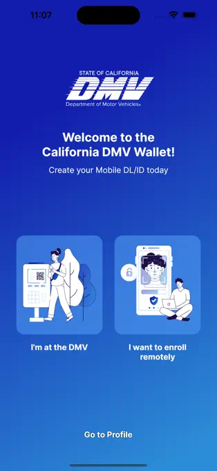
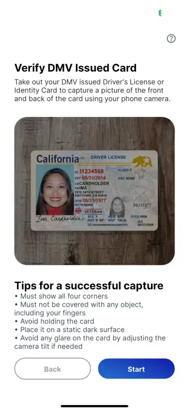
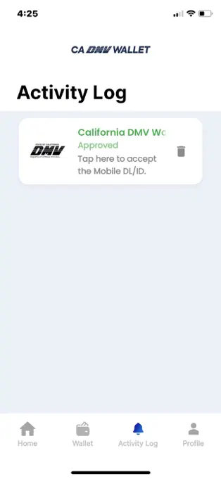
For more analysis examples, you can take a look at the deck.
Sketches: Exploring Movement
Flow was very important to me in this project. We had to heavily consider information hierarchy and visibility, and how to switch between different levels of privacy. In my initial brainstorming sketches, I explored the concept of one main screen with stretching and collapsing components that would reveal and hide more sensitive information.
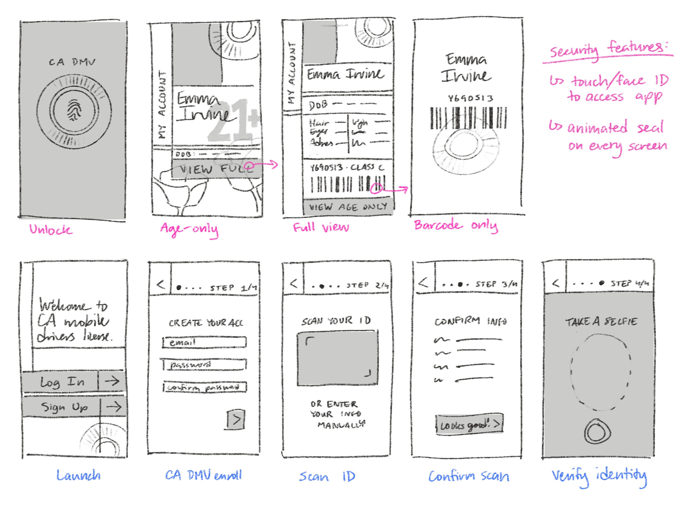
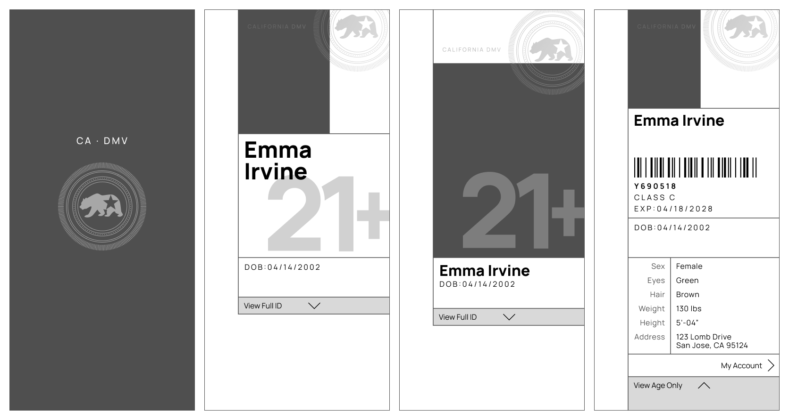
Development
This project had rounds upon rounds of iteration, filled with everything from complete remakes to the subtlest of gradient changes.
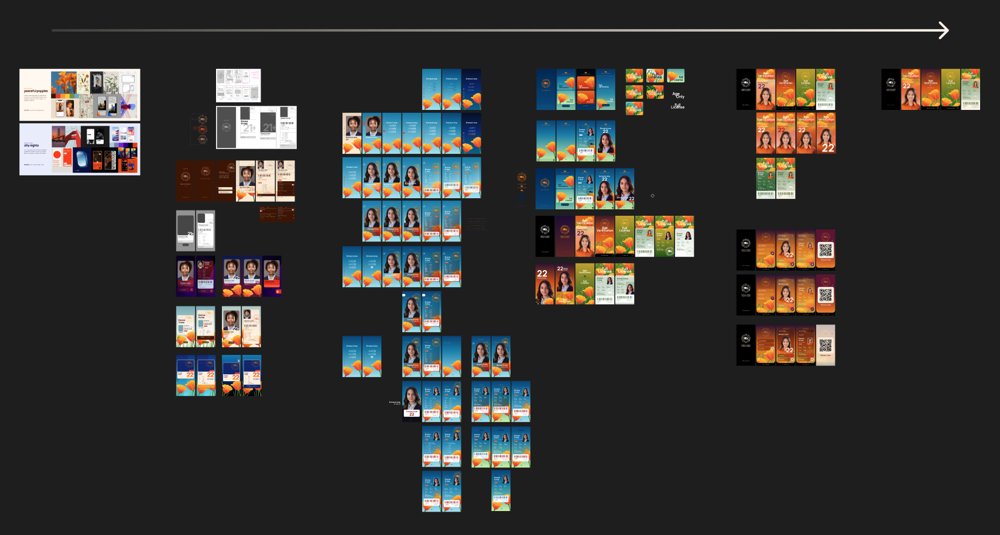
Screenshot of my variants over time.
I began by creating two distinct moodboards, and implemented each direction into my wireframes.
My first direction was called Peaceful Poppies, which was a more muted and illustrative style that references the state flower. The prototype moved smoothly, but was not very natural to test users, and overall just a little visually uneventful.
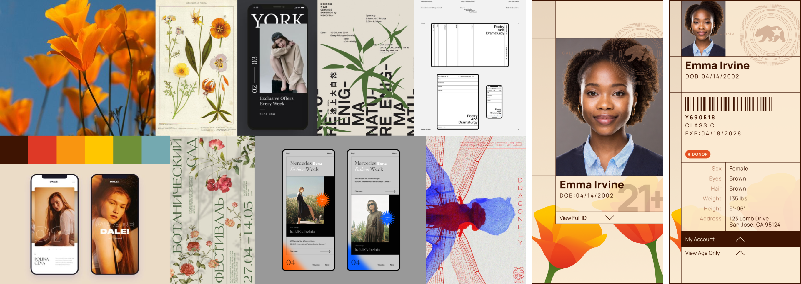
My second direction, City Nights, focused on using darker, crisp graphics with vibrant accents to reflect more of the night-life uses for age verification. This was more intuitive than the first direction, but not very California.
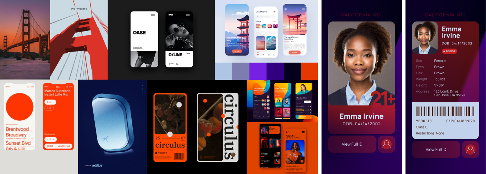
In the next round, I consolidated the best aspects of both designs—specifically, I took the theme of poppies from the first direction, and the vibrant gradients and smooth shapes from the directions.
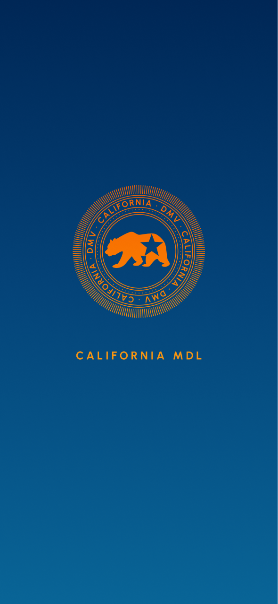
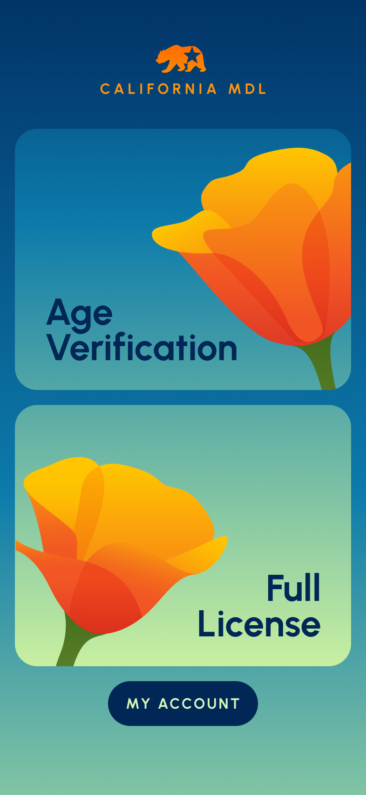
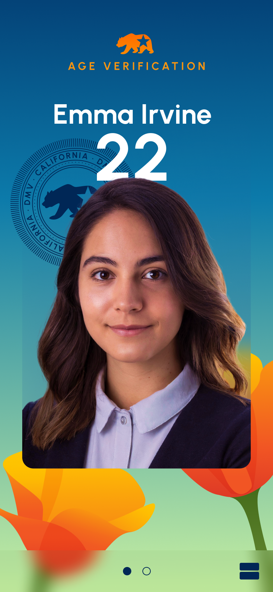
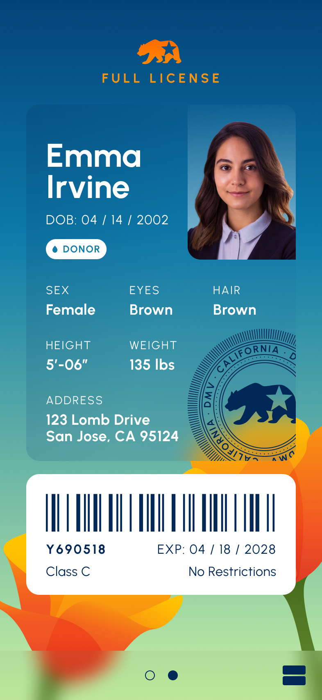
The navigation featured a card-based home screen that led to each of the two subpages; the user could also swipe horizontally between subpages, or exit back to the home screen.
While it was a successful implementation, the home screen was overcomplicated for use with just two cards. In my final round of designs, I reconsidered this gesture interaction system and removed the home screen entirely.
Final Design
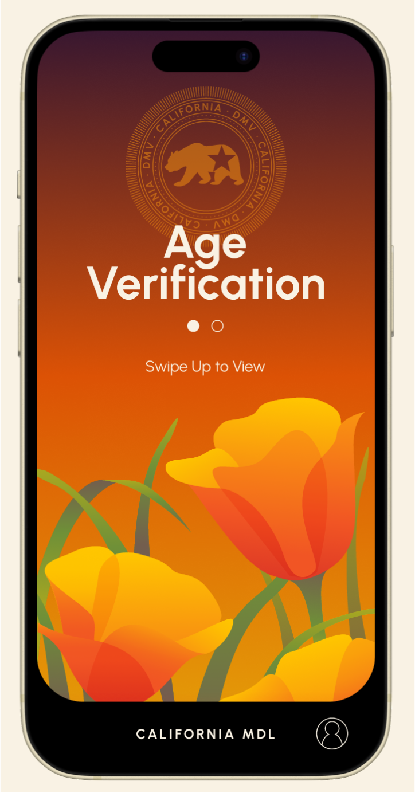
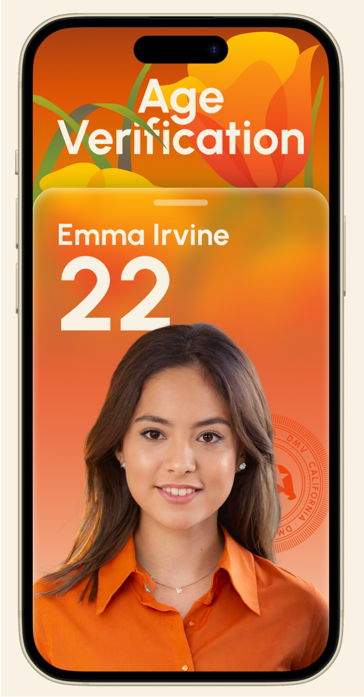
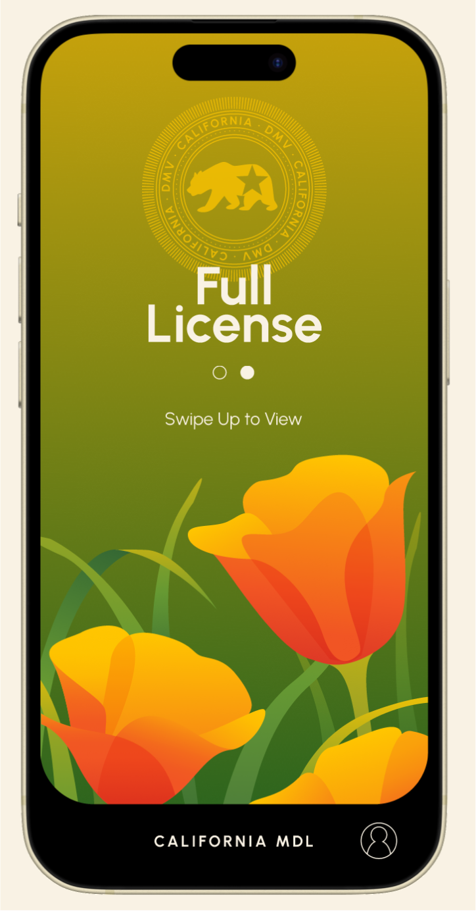
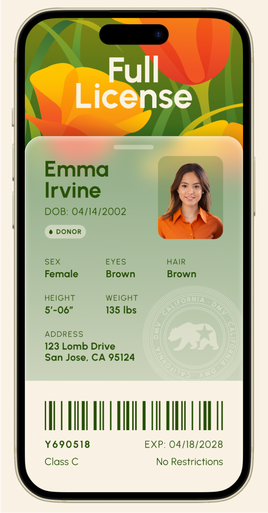
The final design contains one title screen and one detail screen for each of Age Verification and Full License. I opted a warmer color scheme of orange and green, with a focus on one color in each section to keep them visually distinct but unified.
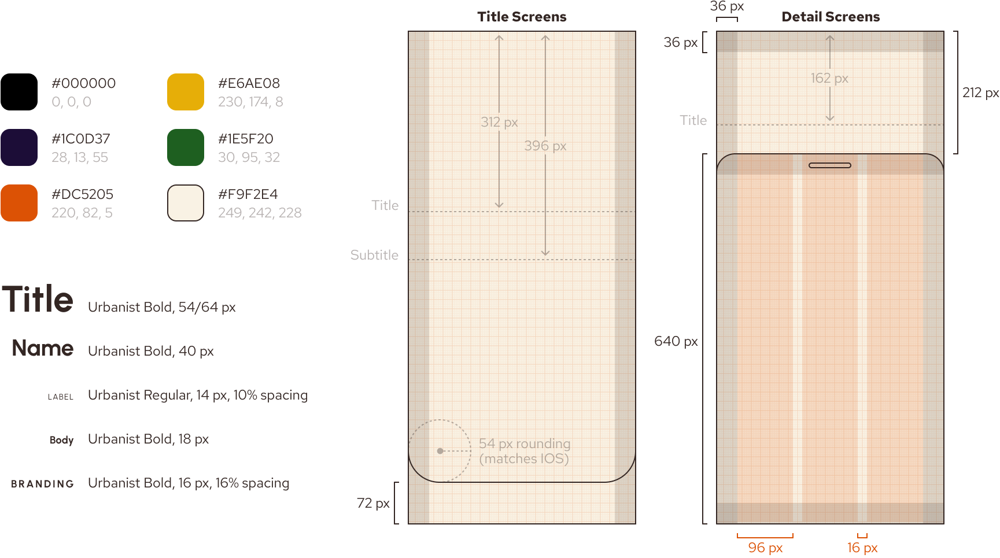
Style Guide
Navigation & Privacy
One of the main considerations throughout this project was at what point to reveal sensitive information. How many layers of interaction between launch and the user's age? The user's address?
I decided to have the app launch to the Age Verification title screen, with horizontal swiping between title screens and vertical swiping to open the more private information.
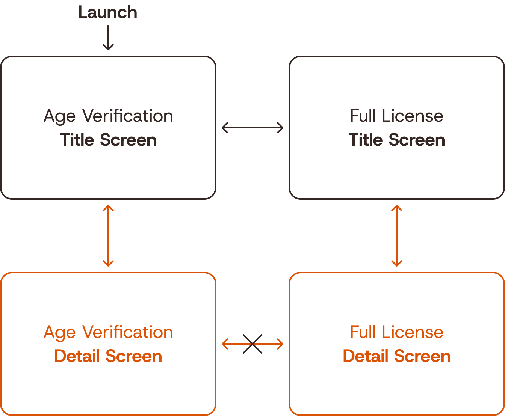
As always, if you're looking for more on the project, take a peek at the deck!